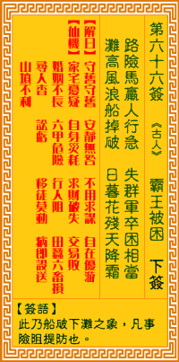

观音灵签第六十六签 【霸王被困】 |
 | |||
路险马行人去远 失群羊困虎相当 危滩船过风翻浪 春暮花残天降霜 |
||||
| 【吉凶】 | 下下签 | 【宫位】 | 卯宫 | |
| 【签语】 | 此卦船破下滩之象，凡事险阻提防也。 | |||
| 【解曰】 | 守旧待时 安静无咎 不用求谋 自在悠游 | |||
| 【仙机】 | 此签家宅忧疑，自身灾耗，求财破失，交易败，婚姻不长，六甲危险，行人阻，田蚕六畜损，寻人杳，讼亏，移徙莫动，病即殁送，山坟不利。 | |||
| 【详解】 | 催马行走，但地势险恶，距离仍相当遥远，失群的羊儿偏偏碰上了老虎;就似船只在急流狂风中行驶，也好比晚春将结束绽放的花朵，又遇霜雪更加速枯萎。 守静安静，安分无忧，不须贪望，自有优游。此签意滞之象，凡事待时仔细小心。 本签者意滞之象。凡举事待时。且必须仔细小心。无一是处之时。目下不许君丝毫动之。一动不如一静。以目前之情况守之。不可勉强。一强求。逞一时之勇之时 亏即主。弄巧成拙。无一可图利。易言之。守静安静安分无忧不须贪望自有优游。 此签有”六神无主”之意。奉劝当事人，勿心慌着急。人在遇到难题的时候，常会因不知如何是好，所以往往转而向旁人求助，希望藉由对方的建议，能让事情有 所帮助。其实自己本身的问题，应该是自己最了解。不妨冷静下来，仔细思考，将事情层层抽丝剥茧、一一厘清之后，也许就能找出症结所在。若实在是想不出办 法、非要向他人求助时，也不要随便拉个人就猛吐苦水，应慎选欲请教的对象。有些人可能听完还没消化，就主观的高谈阔论，不但对事情没有帮助，恐还因此被 他人的你一言、我一语误导了方向，更加混乱。应请教客观中肯、又能从中指出关键处的对象，才有助于厘清问题，帮忙你解决困难。 | |||
| 【典故】 | 楚霸王（项羽）有一支强大的军队，战无不胜，刘邦的军队也很强大，但不及项羽，项羽多次征战胜利后，就自以为天下无敌了。后来和刘邦开战，项羽被刘邦军 | |||